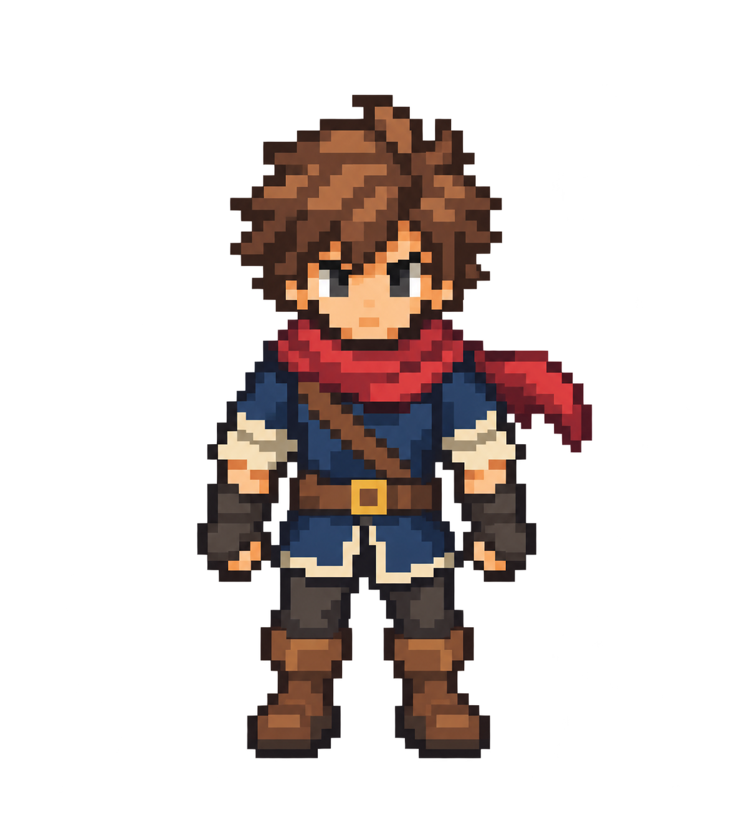
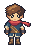
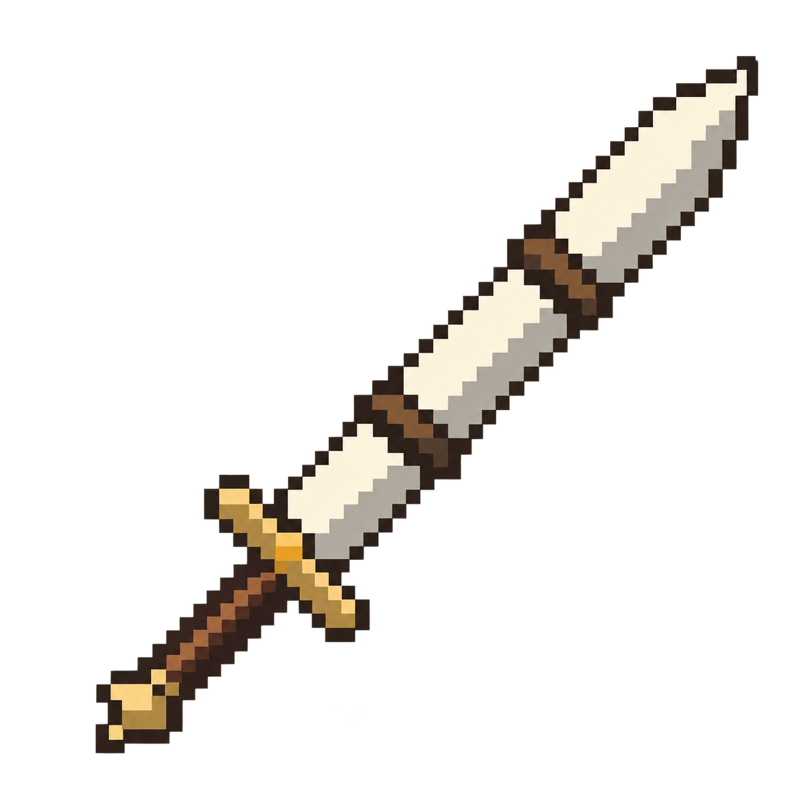
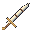

얼굴 · 목도리 · 손발
머리카락을 큰 덩어리로, 옷과 장비를 몇 단계 명암으로. 뒤·옆·걷기 프레임도 같은 발 기준점을 사용합니다.
용사가 다한다 / ART STUDY 04
붉은 목도리와 남색 옷은 그대로. 가는 질감과 반짝임을 덜고, 얼굴과 무기의 모양을 또렷하게 정리했습니다.
큰 시안에서 작은 게임 자산으로



위 이미지는 형태 비교용입니다. 생성 시안을 자동 축소한 결과가 아니라, 게임의 기존 픽셀 데이터 형식으로 원본을 별도로 작성했습니다.
정수배 확대 · 배경 대비 · 발/손잡이 기준점
브라우저 100% 배율을 권장합니다. 배경은 대비 확인용 단색이며 실제 게임 캡처가 아닙니다. 여기의 2×는 원본 픽셀의 배율이고, 게임 카메라 +15%와는 다른 수치입니다.
사슬 고리 → 두 개의 큰 봉인 띠



머리카락을 큰 덩어리로, 옷과 장비를 몇 단계 명암으로. 뒤·옆·걷기 프레임도 같은 발 기준점을 사용합니다.
흑철은 넓고 무겁게, 혈월은 곡선으로, 천공은 길고 가늘게. 각성형도 계열의 모양을 유지합니다.
바닥 대비와 잔무늬를 줄입니다. 현재 구현된 일반 115%·보스방 100% 설정과 휠 조절로 비교합니다.
용사 22색, 성검 10색. 반투명 픽셀 0개. 1·2·4·8배 PNG를 다시 읽어 모든 픽셀이 원본의 정수배와 일치하는지 검증했습니다.
뒤·옆·걷기 프레임, 방향별 손잡이 연결, Nearest 필터와 표시 크기 설정, 실제 이동·공격 검증. 지금은 정적인 원본 2종의 검토 단계입니다.
32×48은 첫 샘플의 규격입니다. 프로젝트 전체의 해상도 상한으로 고정하지 않습니다.